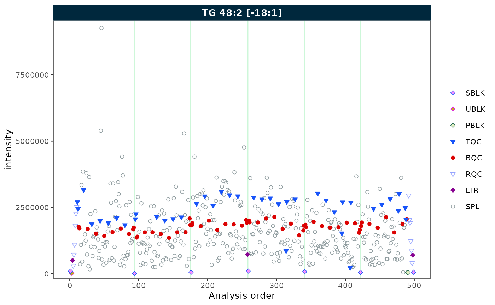
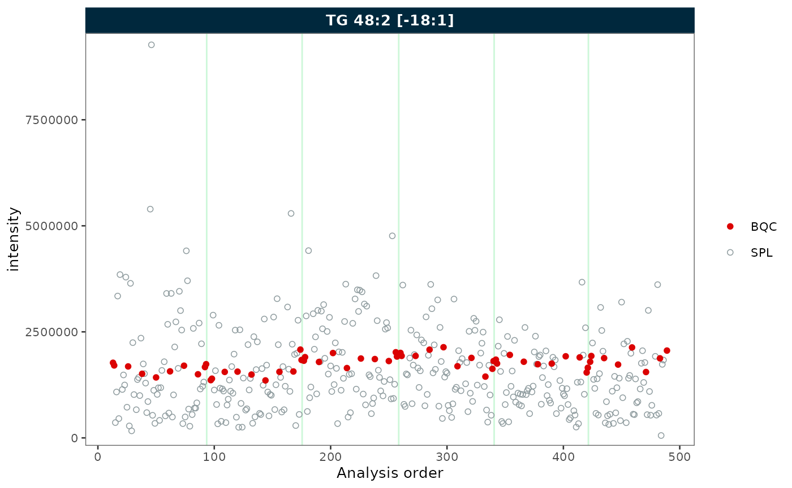
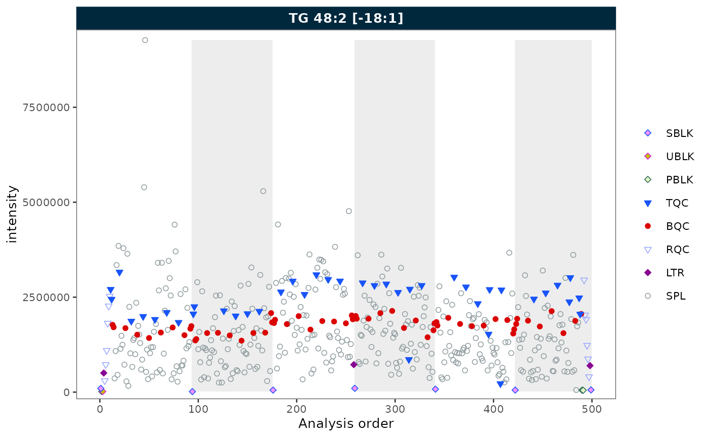
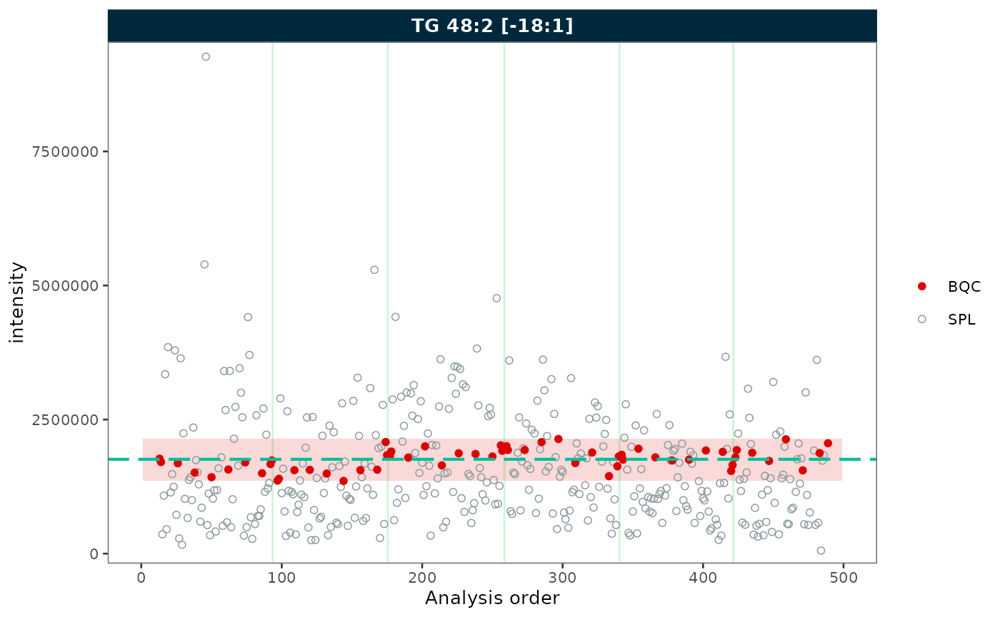
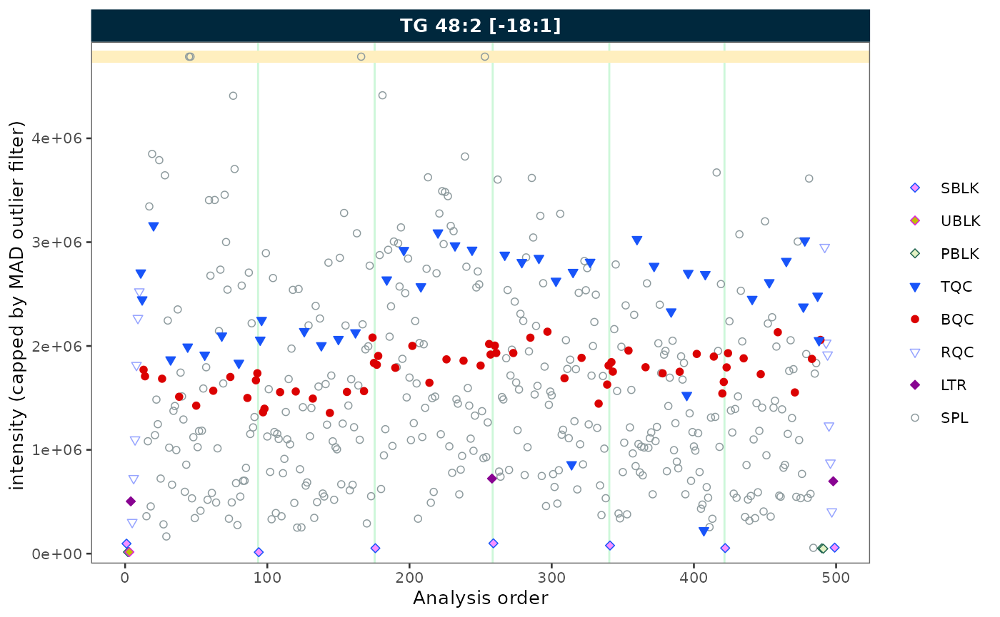
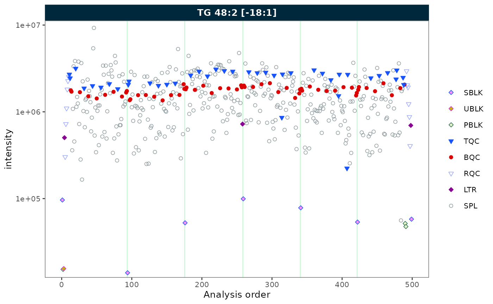
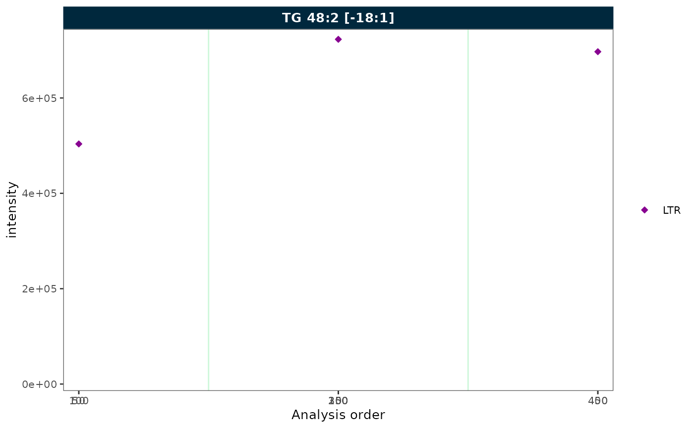
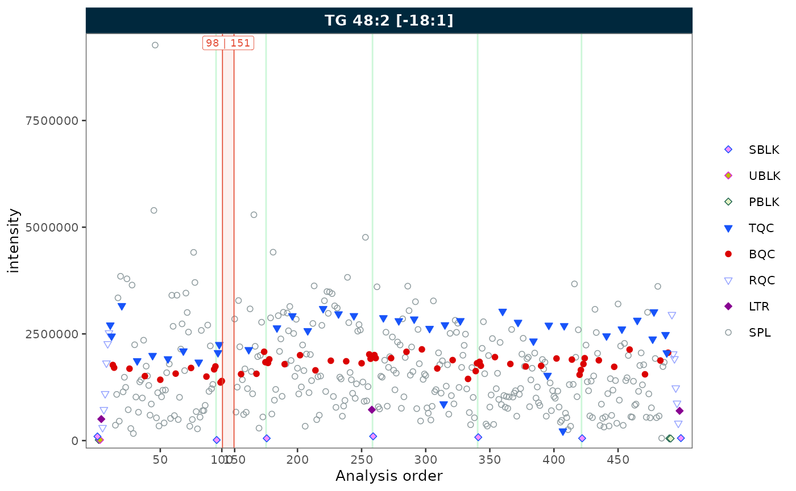
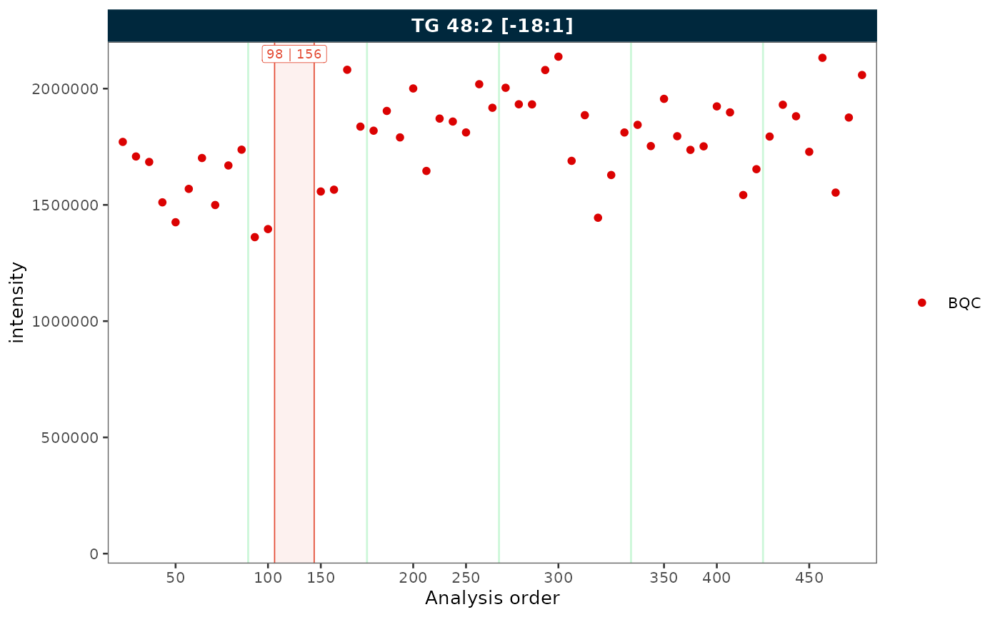
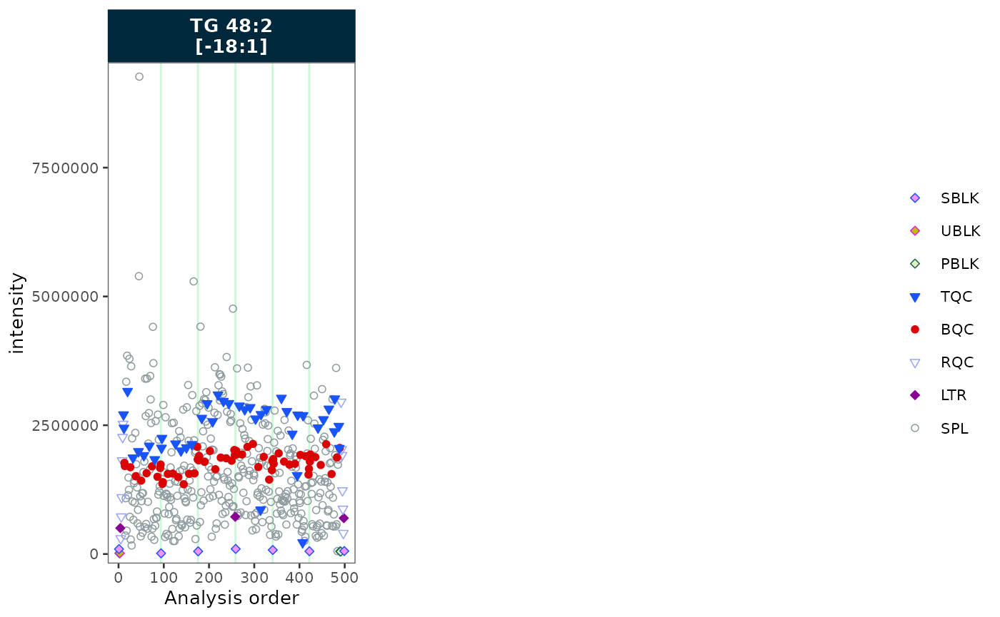

plot_runscatter() visualises feature signals across the
analysis sequence, helping to identify trends, detect outliers, and
assess analytical performance. This tutorial demonstrates the main
parameters using a single feature (CE 18:1) from the
built-in lipidomics dataset.
Setup
library(mrmhub)
mexp <- lipidomics_dataset
mexp <- normalize_by_istd(mexp)
mexp <- calc_qc_metrics(mexp)Basic plot
A minimal call plots all QC and sample types for one feature.
plot_runscatter(mexp, variable = "intensity",
include_feature_filter = "TG 48\\:2 \\[\\-18:1\\]",
rows_page = 1, cols_page = 1)
Selecting QC types
Use qc_types to display only specific sample types.
plot_runscatter(mexp, variable = "intensity",
include_feature_filter = "TG 48\\:2 \\[\\-18:1\\]",
qc_types = c("BQC", "SPL"),
rows_page = 1, cols_page = 1)
Batch display
Set show_batches = TRUE and
batch_zebra_stripe = TRUE to highlight batch boundaries
with alternating shaded areas.
plot_runscatter(mexp, variable = "intensity",
include_feature_filter = "TG 48\\:2 \\[\\-18:1\\]",
show_batches = TRUE,
batch_zebra_stripe = TRUE,
rows_page = 1, cols_page = 1)
Reference lines
Show mean ± k × SD reference lines with
show_reference_lines = TRUE. Use
reference_sd_shade to display the range as a shaded band
instead of lines.
plot_runscatter(mexp, variable = "intensity",
include_feature_filter = "TG 48\\:2 \\[\\-18:1\\]",
qc_types = c("BQC", "SPL"),
show_reference_lines = TRUE,
ref_qc_types = "BQC",
reference_k_sd = 2,
reference_sd_shade = TRUE,
rows_page = 1, cols_page = 1)
Outlier capping
Use cap_outliers = TRUE to cap extreme values based on
MAD fences. This is useful when outliers obscure the trends of QC or
study samples.
plot_runscatter(mexp, variable = "intensity",
include_feature_filter = "TG 48\\:2 \\[\\-18:1\\]",
cap_outliers = TRUE,
cap_sample_k_mad = 3,
rows_page = 1, cols_page = 1)
Log scale
Set log_scale = TRUE to apply a log10 transformation to
the y-axis. Zero or negative values are replaced with the minimum
positive value divided by 5.
plot_runscatter(mexp, variable = "intensity",
include_feature_filter = "TG 48\\:2 \\[\\-18:1\\]",
log_scale = TRUE,
rows_page = 1, cols_page = 1)
Removing gaps in the analysis sequence
Gaps in the x-axis can arise in two ways:
-
Filtered QC types — when only a subset of QC types
is selected, the unselected positions leave gaps. Use
collapse_excluded = TRUEto close them. -
Unannotated analyses — when some runs in the
analytical sequence have no corresponding entry in
@dataset(e.g. solvent blanks or system suitability injections that were not imported), the analysis order contains discontinuities. Useremove_gaps = TRUEto collapse these and mark the former gap positions with vertical indicator lines.
Both options can be combined.
Collapsing excluded QC types
plot_runscatter(mexp, variable = "intensity",
include_feature_filter = "TG 48\\:2 \\[\\-18:1\\]",
qc_types = c("LTR"),
collapse_excluded = TRUE,
rows_page = 1, cols_page = 1)
Removing gaps from unannotated analyses
To demonstrate this feature, we first simulate a dataset with unannotated analyses by excluding a block of runs from batch 2. This creates a contiguous gap in the analysis order, as would occur when solvent blanks or system suitability injections are not imported.
mexp_gaps <- exclude_analyses(
mexp,
analyses = c(
paste0("Longit_batch2_", 1:45),
"Longit_batch2_PQC 12",
"Longit_batch2_PQC 13",
"Longit_batch2_PQC 14",
"Longit_batch2_PQC 15",
"Longit_batch2_TQC13",
"Longit_batch2_TQC14",
"Longit_batch2_TQC15"
),
clear_existing = TRUE
)
mexp_gaps <- normalize_by_istd(mexp_gaps)
mexp_gaps <- calc_qc_metrics(mexp_gaps)
plot_runscatter(mexp_gaps, variable = "intensity",
include_feature_filter = "TG 48\\:2 \\[\\-18:1\\]",
remove_gaps = TRUE,
rows_page = 1, cols_page = 1)
Combining both
When filtering to a single QC type and the sequence contains
unannotated runs, combine collapse_excluded and
remove_gaps to produce a compact, fully annotated plot.
plot_runscatter(mexp_gaps, variable = "intensity",
include_feature_filter = "TG 48\\:2 \\[\\-18:1\\]",
qc_types = c("BQC"),
collapse_excluded = TRUE,
remove_gaps = TRUE,
rows_page = 1, cols_page = 1)
Label wrapping
When feature names are long, strip labels can overflow. Set
label_wrap = TRUE to wrap labels across multiple lines,
controlled by label_wrap_width. Here we show three features
to illustrate the effect on strip text.
plot_runscatter(mexp, variable = "intensity",
include_feature_filter = "TG 48\\:2 \\[\\-18:1\\]",
rows_page = 1, cols_page = 3,
specific_page = 1,
label_wrap = TRUE,
label_wrap_width = 8)
Trend curves
Trend curves visualise the fitted signal used during drift or batch
correction. They require a prior correction step —
show_trend = TRUE will error if no drift or batch
correction has been applied. To plot the values before the last
correction, append _before to the variable name
(e.g. variable = "intensity_before"); for the original
uncorrected values use _raw
(e.g. variable = "intensity_raw").
See the Drift Correction tutorial for a worked example.